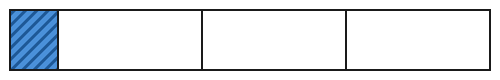

Was ist ein Bruch?
Mit einem KI-Tutor lernen
Ein KI-Tutor erklärt dir diese Seite und hilft dir bei den Übungen. Wähl deinen Assistenten:
Mit Claude öffnen Mit ChatGPT öffnen Mit Mistral Vibe öffnen
Du nutzt dein eigenes Konto beim Anbieter. Der Assistent ist kein Angebot von lernapps.net: lernapps liefert nur Inhalte und Übungen. Die Wahl gilt für alle Seiten, nur auf diesem Gerät.
Einstieg
Eine Pizza wird in 4 gleich große Stücke geschnitten. Du isst 1 Stück. Wie viel von der Pizza hast du gegessen? Du sagst: „Ein Viertel.“ Mit einem Bruch schreibst du das so: .
Das kennst du schon vom Teilen: Das Ganze ist die ganze Pizza. Ein Bruch sagt, welchen Anteil vom Ganzen du meinst. Die 4 unten sagt: Das Ganze ist in 4 gleich große Teile geteilt. Die 1 oben sagt: Du meinst 1 Teil davon. Der Strich dazwischen heißt Bruchstrich.
Du brauchst dafür nur natürliche Zahlen und das Teilen, das kennst du schon (natürliche Zahlen auf der Lernlandkarte).
Ausprobieren
Das Ganze ist der ganze Streifen. Mit den Zahlen oben wählst du, in wie viele gleich große Teile er geteilt ist. Dann tippst du auf Teile, um sie zu färben. Tippst du noch einmal, ist das Teil wieder weiß. Teile, die du nicht färbst, bleiben weiß. Am Anfang sind es 4 Teile und nichts ist gefärbt. Wählst du eine andere Zahl, wird der Streifen neu geteilt und alle Teile sind wieder weiß. Der Streifen bleibt immer gleich lang, nur die Teile werden kleiner oder größer. Unter dem Streifen siehst du, wie viele von allen Teilen gefärbt sind, und den Bruch dazu. Probiere zum Beispiel 8 Teile und färbe 3 davon, dann 5 Teile und färbe 2 davon. Was ändert sich, wenn du mehr Teile wählst? Was bleibt gleich?
In wie viele gleich große Teile ist das Ganze geteilt?
0 von 4 Teilen gefärbt.
Ein Streifen ist das Ganze. Er ist in gleich große Teile geteilt, du kannst 2 bis 12 Teile wählen. Du färbst einige Teile. Zum Beispiel: 8 Teile, 3 davon gefärbt, das sind 3 von 8 Teilen, der Bruch .
Regel
- Bruch
Ein Bruch beschreibt einen Anteil vom Ganzen. Das Ganze ist in gleich große Teile geteilt, und der Bruch sagt, wie viele davon gemeint sind.
- Nenner
Der Nenner steht unter dem Bruchstrich. Er sagt, in wie viele gleich große Teile das Ganze geteilt ist.
- Zähler
Der Zähler steht über dem Bruchstrich. Er zählt, wie viele von diesen Teilen gemeint sind, zum Beispiel gefärbt.
Wichtig: Die Teile müssen gleich groß sein. Sonst sagt der Nenner nichts über die Größe eines Teils.

Hier sind vier Teile, aber sie sind nicht gleich groß. Das gefärbte Teil ist kein Viertel.
Quelle: eigene Zeichnung. Lizenz: CC-BY-4.0.Beispiel
3 von 8 Teilen

Das Ganze ist der Streifen. Zähle zuerst alle Teile, dann die gefärbten.
Quelle: eigene Zeichnung. Lizenz: CC-BY-4.0.Alle Teile: 8, das ist der Nenner. Gefärbte Teile: 3, das ist der Zähler. Der gefärbte Teil ist vom Ganzen. Man liest: „drei Achtel“.
Übung
Übung
Lösung
3 Teile sind nicht gefärbt. Der Bruch beschreibt den gefärbten Teil, also zählt der Zähler die gefärbten Teile.
Hier stehen Zähler und Nenner vertauscht. Unter dem Bruchstrich steht die Zahl aller Teile.
richtige Antwort
5 Teile sind gefärbt, und das Ganze hat 8 Teile.
Der Nenner zählt alle Teile, nicht nur die weißen.
Das Ganze hat 8 gleich große Teile, 5 davon sind gefärbt. Das ist der Bruch fünf Achtel.
Mehr dazu:
Übung
Lösung
Auch das gefärbte Teil gehört zu den Teilen des Ganzen. Der Nenner zählt alle Teile.
5 Teile sind weiß. Der Bruch beschreibt hier aber den gefärbten Teil.
richtige Antwort
1 Teil ist gefärbt, und das Ganze hat 6 Teile.
Hier stehen Zähler und Nenner vertauscht.
Das Ganze hat 6 gleich große Teile, 1 davon ist gefärbt. Das ist der Bruch ein Sechstel.
Mehr dazu:
Übung
Lösung
Richtige Antwort: Die Aussage stimmt.
Der Nenner 5 sagt, in wie viele gleich große Teile das Ganze geteilt ist. Der Zähler 3 sagt, wie viele davon gemeint sind.
Mehr dazu:
Übung
Lösung
Richtige Antwort: Die Aussage stimmt nicht.
Der Nenner zählt alle gleich großen Teile des Ganzen. Die gefärbten Teile zählt der Zähler.
Mehr dazu:
Übung
Lösung
Ja, denn der Streifen hat 3 Teile und 1 Teil ist gefärbt.
Die Zahlen passen, aber ein Drittel gibt es nur, wenn alle 3 Teile gleich groß sind.
Nein, denn ein Drittel braucht 2 gefärbte Teile.
Ein Drittel ist 1 Teil von 3 gleich großen Teilen. Die Zahl der gefärbten Teile passt hier.
Nein, denn die Teile sind nicht gleich groß. richtige Antwort
Ein Drittel gibt es nur, wenn das Ganze in 3 gleich große Teile geteilt ist.
Ein Bruch wie ein Drittel braucht gleich große Teile. Hier sind die drei Teile verschieden breit.
Mehr dazu:
Übung
Drei Beispielaufgaben, jede mit ihrer Lösung:
Aufgabe Nr. 1
Der Bruch beschreibt einen gefärbten Teil. In wie viele gleich große Teile ist das Ganze geteilt?
Tipp
Der Nenner steht unter dem Bruchstrich.
Lösung
- Der Nenner sagt, in wie viele gleich große Teile das Ganze geteilt ist.
- Bei steht unten die 10, also hat das Ganze 10 Teile.
Richtige Antwort: 10
Aufgabe Nr. 2
Der Bruch beschreibt einen gefärbten Teil. In wie viele gleich große Teile ist das Ganze geteilt?
Tipp
Der Nenner steht unter dem Bruchstrich.
Lösung
- Der Nenner sagt, in wie viele gleich große Teile das Ganze geteilt ist.
- Bei steht unten die 11, also hat das Ganze 11 Teile.
Richtige Antwort: 11
Aufgabe Nr. 3
Der Bruch beschreibt einen gefärbten Teil. In wie viele gleich große Teile ist das Ganze geteilt?
Tipp
Der Nenner steht unter dem Bruchstrich.
Lösung
- Der Nenner sagt, in wie viele gleich große Teile das Ganze geteilt ist.
- Bei steht unten die 12, also hat das Ganze 12 Teile.
Richtige Antwort: 12
Übung
Drei Beispielaufgaben, jede mit ihrer Lösung:
Aufgabe Nr. 1
Der Bruch beschreibt den gefärbten Teil eines Streifens. Wie viele Teile des Streifens sind nicht gefärbt?
Tipp
Der Nenner zählt alle Teile, der Zähler die gefärbten.
Lösung
- Alle Teile: der Nenner 7. Gefärbte Teile: der Zähler 5.
- Nicht gefärbt: 7 − 5 = 2.
Richtige Antwort: 2
Aufgabe Nr. 2
Der Bruch beschreibt den gefärbten Teil eines Streifens. Wie viele Teile des Streifens sind nicht gefärbt?
Tipp
Der Nenner zählt alle Teile, der Zähler die gefärbten.
Lösung
- Alle Teile: der Nenner 8. Gefärbte Teile: der Zähler 6.
- Nicht gefärbt: 8 − 6 = 2.
Richtige Antwort: 2
Aufgabe Nr. 3
Der Bruch beschreibt den gefärbten Teil eines Streifens. Wie viele Teile des Streifens sind nicht gefärbt?
Tipp
Der Nenner zählt alle Teile, der Zähler die gefärbten.
Lösung
- Alle Teile: der Nenner 10. Gefärbte Teile: der Zähler 1.
- Nicht gefärbt: 10 − 1 = 9.
Richtige Antwort: 9